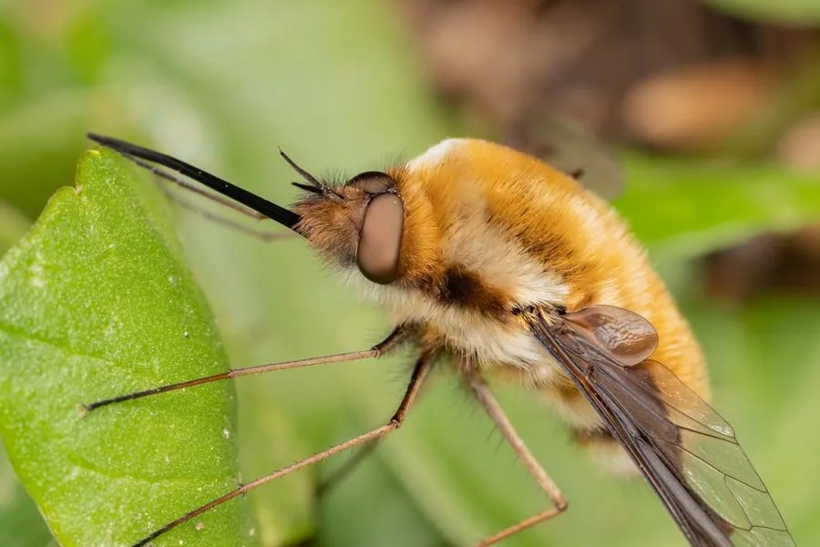

昆虫 · 动物界
蜂虻 Bombylius major

浑身披黄褐绒毛、外形似蜂的蝇类，翅前缘有暗斑，成虫悬停吸蜜，幼虫寄生于独居蜂的巢中，是早春常见的访花者。
- 分类
- 门节肢动物门纲昆虫纲目双翅目科蜂虻科属蜂虻属
- 栖息环境
- 林地边缘、灌丛、花园和草地，幼虫寄生于独居蜂巢
- 地理分布
- 北半球温带地区，包括欧洲、北非、亚洲和北美，中国见于北方和西南山地
- 保护级别
- 尚无保护级别；为早春访花昆虫的重要成员
物种志
蜂虻的体长约八至十二毫米，体形粗壮，全身密被黄褐色至金黄色的长绒毛，外形酷似一只小蜂，蜂虻之名由此而来。它的翅透明，前缘有一条深褐色的暗斑，停歇时翅向两侧平展。头部较小，复眼大，口器细长，能伸进花冠吸蜜，足细长，后足尤其发达。
它分布于北半球的温带地区，包括欧洲、北非、亚洲和北美，在中国见于北方和西南山地，栖息在林地边缘、灌丛、花园和草地，成虫在春季出现，飞行时能悬停在空中，常贴着地面或花前停留，吸食报春花、堇菜等早春花卉的花蜜。它的幼虫是寄生性的，雌虫把卵产在独居蜂巢附近的土中或花上，幼虫孵化后潜入独居蜂或土蜂的巢室，取食蜂的幼虫和储粮。它一年发生一代，以蛹在土中越夏越冬。它尚无保护级别，是早春访花昆虫的重要成员。
形态与习性
- 体长约八至十二毫米，体形粗壮
- 体表密被黄褐色长绒毛，外形似蜂
- 翅透明，前缘有一条深褐色暗斑
- 食性成虫吸食早春花卉花蜜，能悬停
- 幼虫寄生于独居蜂巢，取食蜂幼虫与储粮
- 发生世代一年一代，以蛹在土中越夏越冬
趣味知识
- 它其实是一只蝇，却长得像蜂，靠这身伪装躲开捕食者。
- 它能在空中定住不动，把长喙探进花心慢慢吸蜜。
- 幼虫偷偷住进独居蜂的巢室，把蜂的幼虫和存粮一起吃掉。